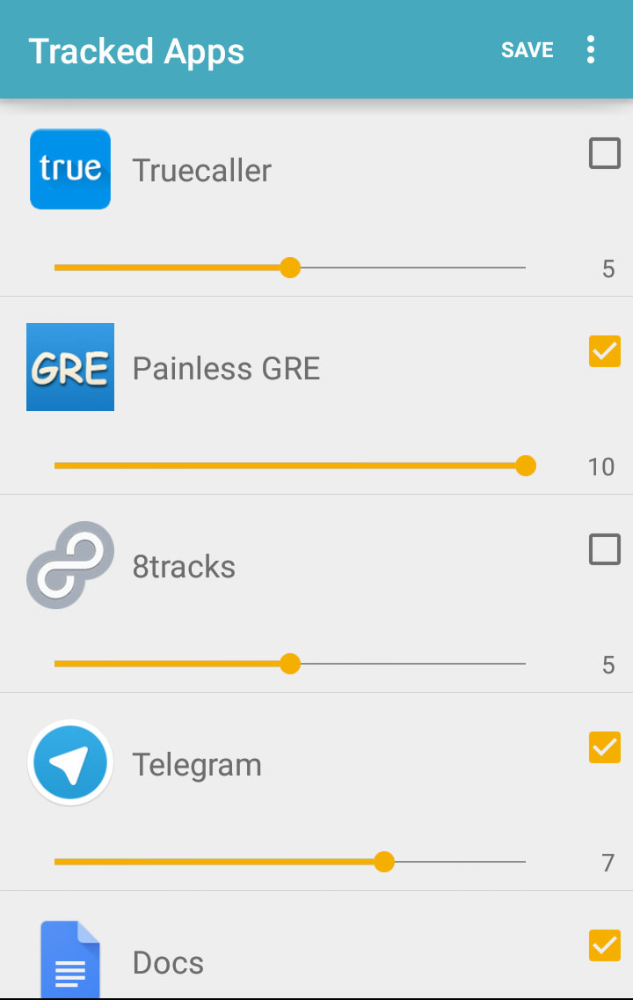

F.O.C.U.S
Gauge the productivity of your phone use

Motivation
With the incessant arrival of new engaging apps coupled with the immersiveness of other classics, users have gained access to vast multitude of activities. However, for many individuals it becomes a challenge to understand which of these apps actually lead to productivity. Since productivity is a very subjective attribute, a simple tag to weed out applications that are not useful is inadequate.
Solution
User’s should be provided the discretion of assigning the utility of a given app, as per their personal activity. Moreover, a real time monitoring system to understand and visualise their smart phone usage will elucidate them about their daily productive. These coupled with positive reinforcement and regular encouragement makes the app a wholesome productivity tracker.
F.O.C.U.S (Focus on Constructive and Useful Stuff) is an android app that tries to fulfil these tasks in order to tackle the problem.
Features
-

Configure Utility
Every user is enabled to pick out which apps to track and select (on a scale of 1-10) how useful an app is to them. A simple way of explaining this to the user was, “How many times out of 10 do use app A for productive tasks?”
-
Real Time Monitoring
Based on user configurations, the app monitors the duration other apps remain on the foreground. Depending on how an app is scored, an overall productivity score for that day is gauged. E.g. App A is scored 5/10 and the user uses it for an hour. The user’s will be shown that their day has been 50% productive so far and they’ve spent 30 minutes productively.
-
Aggregate Statistics
Apart from daily monitoring, a user may also view their overall productivity over all time. Being exposed to their record over a period of time helps them remain motivated.
-

App Wise Breakdown
Along with this a real time app wise breakdown of the productivity is also provided. This helps a user understand how much an app contributes to their total productivity. Furthermore a user can select an app and get in-depth statistics of that app over time. On observing this a user can pinpoint which apps to spend more time on and which ones to avoid.
Zen Mode
A simple feature that allows the user to set a time during which they must remained focussed on another task away from the phone. If the user gets distracted and opens a new app or responds to a notification, their zen breaks. The aim of this feature is for the user to self train themselves to focus their attention.
Daily Notifications
Every time a user’s productivity for the day surpasses their average, they are encouraged with a positive notification. In case of failing to do so they are encouraged to do better. This also leads to the user remaining engaged.
Iterations
The initial design was meant to be extremely minimalist. A static single screen was used to show the user their progress. This screen also housed basic icons which would lead to different screens for different purposes. The idea was to put a spotlight on the main activity of the app, that is to monitor your daily productivity, while letting the users go to other screens on a need basis.

Primary evaluations of that prototype lead us to modify the UI such that it is more intuitive. User’s wanted equally quick access to other screens as well. Plus, they would often tend to quickly switch across multiple screens to understand their phone usage better. The next iteration improved upon this feedback by placing the major screens as laterally navigable tabs. Infrequent tasks were collapsed and placed in a hamburger menu.

As a solution FOCUS strongly hinges on user input to gauge the productivity of an app while monitoring it. Often some users would forget or ignore this aspect. Consequently their app would not produce the best results. In order to ensure users provide the initial impetus required to make FOCUS work, overlay tutorials triggered when the app starts. This behaved as a virtual tour for the user.
For the solution to this problem, the original concept was expected to be thorough, i.e. it tracks all apps. What subsequent evaluations revealed was that this can lead to a lot of noise, while a user is only interested in understanding their engagement with particular apps. An opt-in based mechanism with normalised ratings were given to every app on the phone. Now, every user could personally configure what FOCUS tracks.

The last user study that was conducted had testers use the app on their own phones for over a week. At the end of this duration they answered a questionnaire. New areas of improvement came to light. These are especially relevant since this app is supposed to be a long-term lifestyle app
Existing Alternative
QualityTime is an app on the Google Play Store that is motivated by a similar problem. Although QT’s approach relies on simply displaying the user raw duration based data. It doesn’t quantify the productivity in anyway, rather expecting the user to mentally work that bit out. However, it is far most robust and extensive in the breadth of its information.
Another feature of QT that needs to mentioned is called Take-a-Break. Unlike Zen Mode that is virtually trying to act as a Yoda or a Miyagi for the user, Take-a-Break puts the user on a leash. If this mode is activated, the user is practically enslaved out of their phone as QT automatically pops up on every attempt to change the app.
Future
Gamification
Rewarding the user with badges and achievements (such as zen mode streaks) can make it extremely engaging.
Competition
Global, local or social leaderboards that users can participate in would bring in added enjoyment and regularity of use.
Parental/Employer Perspective
One possible use case would be to allow higher entity to access this information and accordingly provide bonuses.